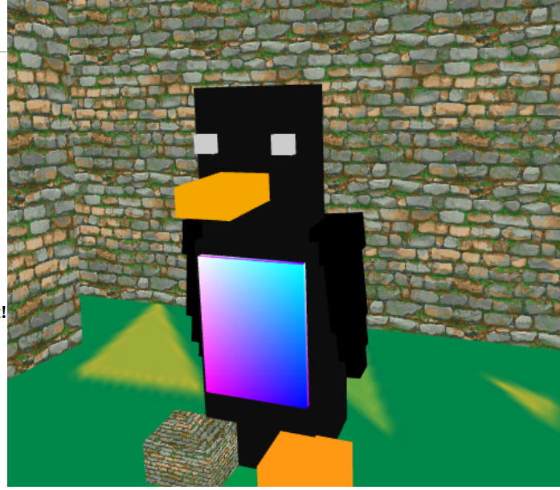

Anthony Duong
ankaduon@ucsc.edu
Notes to graders: Controls
W: forward
S: backward
A: left
D: right
Q call camera.panLeft()
E call camera.panRight()
J: to add block at where blue is
u to break block where red is
Space to move player up
Shift to move player down
click canvas scren to enter mouse mode.
Esc to escape
left click to add block where blue is at
rigth click to delete block where red is at
There's a penguin somewhere break the blocks to find it!

Animation :
fps